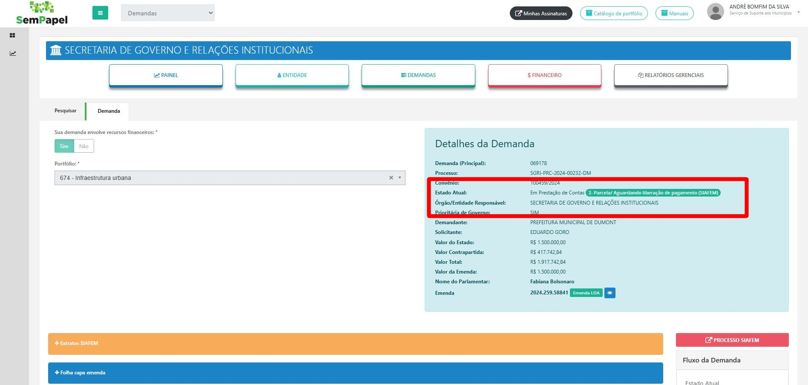

Resposta: A demanda está aguardando a equipe de Finanças efetuar as análises que são pertinentes à liberação do pagamento e em seguida será realizado o pagamento.
Veja em "Estado Atual: Em Prestação de Contas 2- Parcela/ Aguardando liberação de pagamento (SIAFEM)". Não é necessário ver mais nada.
A demanda está em prestação de contas, aguardando o SIAFEM. Só orientar mas se a pessoa quiser saber mais vamos orientar para ela falar com nivel 2. O Siafem olha se tem Cadin, dentre outros.
excecoes: restricoes, 3 situaçoes onde exste possibiçlidade de restricao: 1 bloqueiop quando é demanda loa e o municipio perdeu o prazo 2 bloqueio no dia que estao realizando as assinaturas o municipio cai no CAdin 3 ao assinar o prefeito tem que anexar .... neste dia se a assinatura for adiada para um dia posterior o negocio é bloqueado toda sexta feira é feito o pagamento na semana do pagamento o municipio tem qu estar tudo ok qunado a fazenda for pagar tem que estar tudo ok 